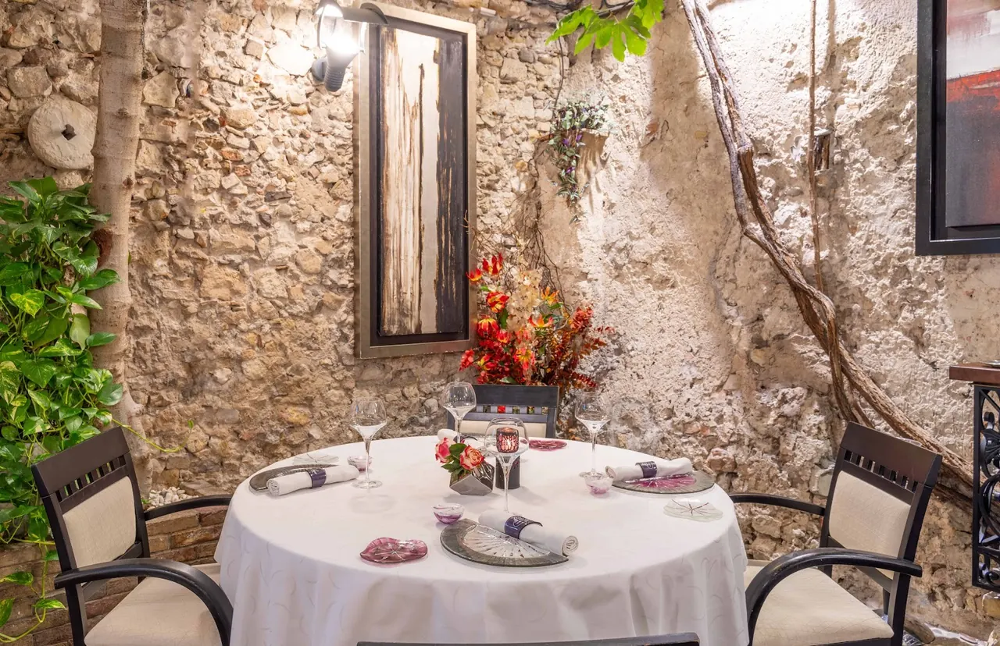

식당·카페 P0
Une table pour deux, s'il vous plaît.
두 명 자리 부탁합니다.
윈 타블 푸르 되 실 부 플레

앙티브 구시가지의 고즈넉한 성벽 안쪽에 자리한 르 피기에 드 생테스프리(Le Figuier de Saint-Esprit)는 코트다쥐르를 대표하는 파인다이닝 레스토랑이다.
레스토랑 이름의 유래가 된 안뜰의 거대한 무화과나무와 고색창연한 석조 아치가 자아내는 아늑한 분위기 속에서, 프랑스 가스트로노미의 거장 크리스티앙 모리세(Christian Morisset) 셰프와 그의 가족이 이끄는 정통 남프랑스 요리를 경험할 수 있다.
셰프의 시그니처인 오징어 먹물 카넬로니와 진흙 도자기에 감싸 구워낸 알피유 어린 양고기는 지중해 해산물과 프로방스 육류의 풍미를 극치로 끌어올린 걸작으로 평가받는다.
여행자가 직접 지정한 핵심 희망 식당(WISH-01)으로, 일요일 점심 서비스(12:15~13:30)에 맞춰 앙티브 구시가지 산책과 결합하기에 최적이다. 앙티브 역에서 도보 8분 거리의 구시가지 중심에 위치하며, 평일 및 주말 런치 코스를 통해 미쉐린 1스타의 완성도를 합리적으로 즐길 수 있다.
| 운영시간 | 점심 12:15–13:30 · 저녁 19:30–21:30 |
|---|---|
| 휴무 | 화요일·수요일 정기휴무 (일요일 점심 정상 영업) |
| 가격대 | €55-€145 |
| 예약 | 사전 예약 필수 (공식 웹사이트 또는 전화) |
| 소요시간 | 90–105분 재확인 |
| 항목 | 상세 정보 |
|---|---|
| 위치 | 7 Promenade Amiral de Grasse / 14 Rue Saint-Esprit, 06600 Antibes, France |
| 좌표 | 43.5816, 7.1278 |
| 운영 시간 | 점심 12:15–13:30 · 저녁 19:30–21:30 |
| 정기 휴무 | 화요일·수요일 (일요일 점심 정상 영업) |
| 가격대 | 점심 포뮬러 €55~€75 · 단품/메뉴 €118~€145 |
| 예약 | 사전 예약 필수 (공식 웹사이트 또는 전화) |
| 접근 교통 | TER 앙티브(Antibes) 역에서 도보 8~10분 (구시가지 피카소 미술관 인근) |
| 공식 정보 | 공식 웹사이트 (verified_at: 2026-08-21) |
크리스티앙 모리세는 앙티브의 전설적인 르 주아나(Hotel Juana - La Terrasse)에서 알랭 뒤카스의 뒤를 이어 2스타를 유지했던 남프랑스 요리계의 거장이다. 2005년 자신의 식당을 열며 중앙 중정에 뿌리내린 백년 수령의 무화과나무를 중심으로 공간을 설계했다.
Une table pour deux, s'il vous plaît.
두 명 자리 부탁합니다.
윈 타블 푸르 되 실 부 플레
Une carafe d'eau, s'il vous plaît.
수돗물 한 병 부탁합니다.
윈 카라프 도 실 부 플레
L'addition, s'il vous plaît.
계산서 부탁합니다.
라디시옹 실 부 플레

국제영화제의 상징 크루아제트 대로와 호화 요트 항구, 그리고 11세기 중세 어촌의 원형 르 쉬케 언덕이 공존하는 코트다쥐르의 영화 도시.

해발 92m 바위 절벽 위에서 천사의 만(Baie des Anges)과 구시가지, 림피아 항구를 360도 파노라마로 굽어보는 니스 최고의 천연 전망 공원.

지중해 꽃과 프로방스 제철 식재료, 그리고 갓 구워낸 니스 전통 소카(Socca)를 맛보는 유서 깊은 야외 시장 광장.

지중해로 60m 솟아오른 천연 바위 절벽 위에 조성된 모나코 대공국의 역사적 심장부이자 왕궁 마을.

크루아제트의 화려함 뒤에 숨겨진 11세기 옛 어촌의 가파른 돌계단 골목과 정상 성당에서 바라보는 칸 만의 파노라마.

칸 주민들의 부엌이자 지중해 해산물, 프로방스 과일, 꽃, 치즈가 가득한 1934년 유서 깊은 철골 재래시장.